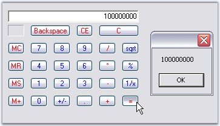
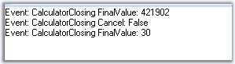

The event for Calculator control and PopupCalculator control are discussed in this section.
The ValueCalculated event fires each time the value of the CalculatorControl is changed. That is, even if you just press any digit, this event will be handled.
The event handler receives an argument of type CalculatorValueCalculatedEventArgs. To get the final result, use LastAction property of the CalculatorValueCalculatedEventArgs in the ValueCalculated event.
|
Members |
Description |
|
ErrorCondition |
Specifies the error condition of the Calculator control if any. |
|
LastAction |
Gets/Sets the last action that was performed. |
|
MemoryValue |
Gets/Sets the MemoryValue of the Calculator control. |
|
Message |
Gets/Sets the custom error message when in error mode. |
|
Value |
Gets/Sets the CalculatorValue object that contains the value of the Calculator control. |
We can retrieve the value of the Calculator control after '=' button is pressed using the following code snippet.
|
[C#]
private void calcctrl_ValueCalculated(object sender,CalculatorValueCalculatedEventArgs arg) { // Checks the final answer after '=' is pressed. if(!arg.ErrorCondition && arg.LastAction == CalcActions.CalcOperatorEquals) MessageBox.Show(calcctrl.Value.ToString()); } |
|
[VB.NET]
Private Sub calcctrl_ValueCalculated(ByVal sender As Object, ByVal arg As CalculatorValueCalculatedEventArgs) If Not arg.ErrorCondition AndAlso arg.LastAction = CalcActions.CalcOperatorEquals Then
' Checks the final answer after '=' is pressed. MessageBox.Show(calcctrl.Value.ToString()) End If End Sub |

Figure 201: LastAction identified using ValueCalculated Event
Closing Event of the PopupCalculator control
This will be raised by popupCalculator when closing after "=" button was clicked. We can implement this event to display the final value of the Calculator control as follows.
|
[C#]
this.popupCalculator1.Closing += new PopupCalculatorClosingEventHandler(this.HandlePopupCalculatorClosingEvent);
public void HandlePopupCalculatorClosingEvent(object sender, CalculatorClosingEventArgs args) { //Event logging string item = args.FinalValue.ToString(); string eventlogmessage = String.Format("Event: {0} FinalValue: {1}\r\n", "CalculatorClosing", item); Console.WriteLine(eventlogmessage); } |
|
[VB.NET]
Private Me.popupCalculator1.Closing += New PopupCalculatorClosingEventHandler(Me.HandlePopupCalculatorClosingEvent)
Public Sub HandlePopupCalculatorClosingEvent(ByVal sender As Object, ByVal args As CalculatorClosingEventArgs) 'Event logging Dim item As String = args.FinalValue.ToString() Dim eventlogmessage As String = String.Format("Event: {0} FinalValue: {1}" & Constants.vbCrLf, "CalculatorClosing", item) Console.WriteLine(eventlogmessage) End Sub |

Figure 202: Event log Message of the last action in the Calculator Control